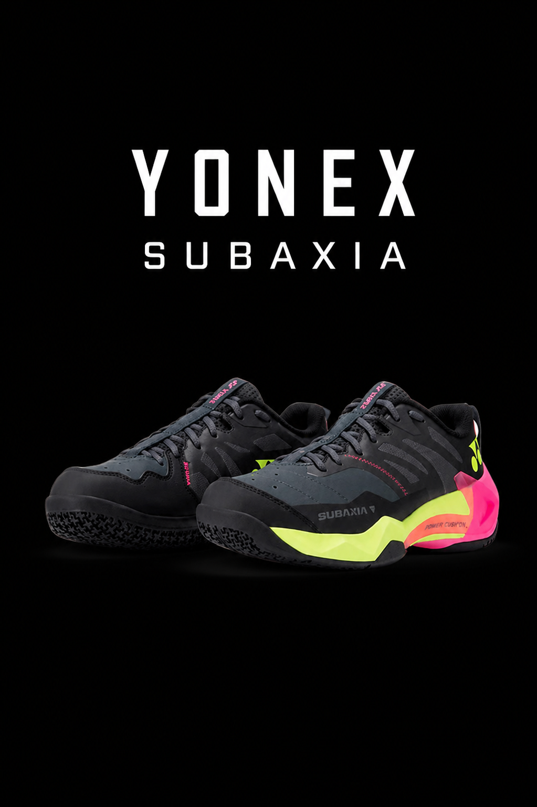

YONEX SUBAXIA

The Yonex SUBAXIA GT is an elite, next-generation badminton shoe built for explosive power, responsiveness, and
supreme shock absorption. Designed to succeed the Comfort series, the Subaxia features Yonex's breakthrough
"GRPHT THRTTL" tech to deliver high energy return on jump smashes and quick lunges.
KEY FEATURES AND TECHNOLOGIES:
- GRPHT THRTTL (Graphite Throttle): A molded Power Graphite plate combined with Power Cushion
Rev foam for 37% better impact absorption and 42% more repulsion compared to standard EVA foam.
- Feather Bounce FOAM: Ultra-lightweight cushioning in the midsole designed to provide an
added bounce and fluid movement with every step.
- Radial Blade Outsole: Uses a specialized, deep-groove pattern designed for multi-directional
traction, sharp court pivots, and quick recovery.
- 3D Heel Cushioning & Split Midsole: The heel area is slightly elevated with higher midsole
volume to manage high-impact ground contact, while the forefoot remains firm for rapid takeoffs.
- Fit Options: Designed with a "wear-and-go" feel featuring an inner bootie and Double
Raschel Mesh. They are available in both Standard/Narrow and Wide-Fit editions to accommodate different foot
shapes.